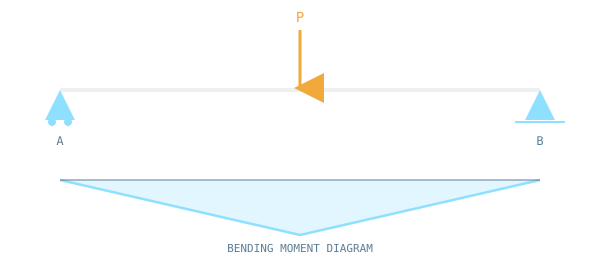

Forces, reactions, bending moments and deflections in beams, trusses and frames.

NOC: Structural Analysis I — IIT Kharagpur
Click an option to see the correct answer and a short explanation instantly.